| Nombre | Posición | Edad | Bibliografía | Portada |
|---|---|---|---|---|
| Salem Al-Dawsari | Extremo derecho | 31 |
Salem Al-Dawsari es un extremo derecho rápido y habilidoso, clave en la ofensiva de Arabia Saudita y en el Al Hilal. |
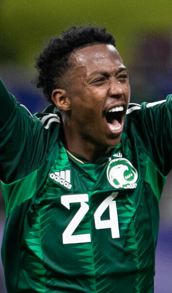 |
| Mohammed Al-Owais | Portero | 32 |
Mohammed Al-Owais es el portero titular, reconocido por su seguridad bajo los tres palos y experiencia en torneos internacionales. |
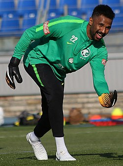 |
| Saleh Al-Shehri | Delantero | 30 |
Saleh Al-Shehri es delantero goleador, famoso por su participación clave en victorias importantes, incluyendo el gol histórico contra Argentina en 2022. |
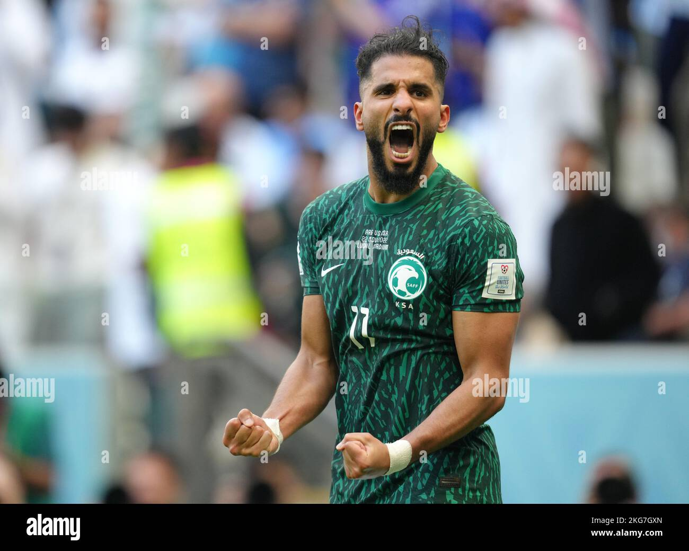 |
| Yahya Al-Shehri | Mediocampista | 32 |
Yahya Al-Shehri es mediocampista creativo, capaz de asistir y organizar el juego ofensivo del equipo. |
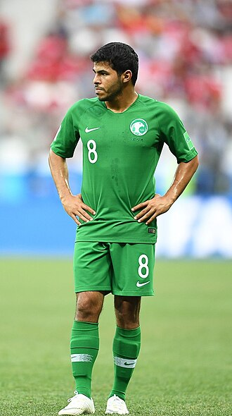 |
| Feras Al-Buraikan | Delantero | 24 |
Feras Al-Buraikan es joven delantero, con gran capacidad goleadora y velocidad, destacando en la liga saudí. |
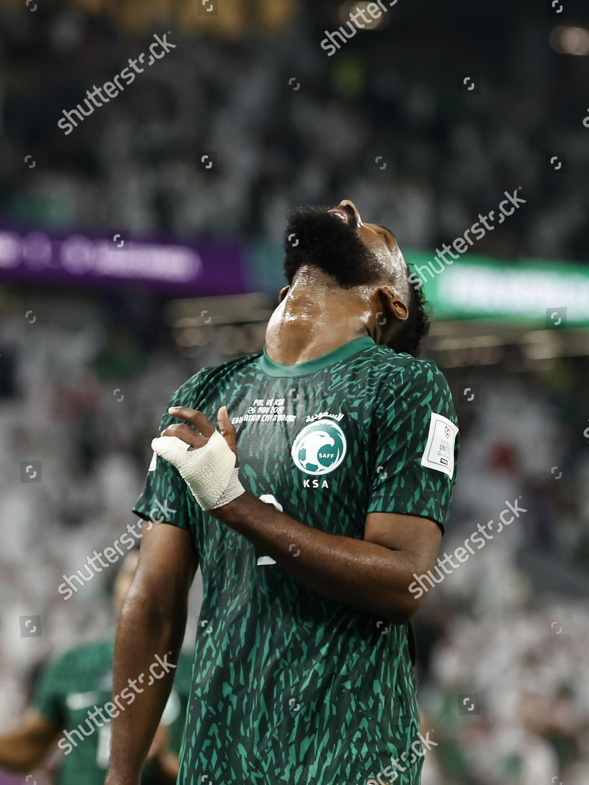 |
| Abdullelah Al-Amri | Defensa central | 26 |
Abdullelah Al-Amri es defensa central sólido, aporta fuerza y seguridad en la zaga de Arabia Saudita. |
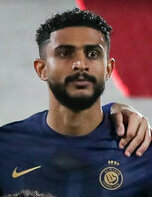 |
| Ali Al-Bulayhi | Defensa central | 30 |
Ali Al-Bulayhi es defensa central experimentado, reconocido por su liderazgo y juego aéreo. |
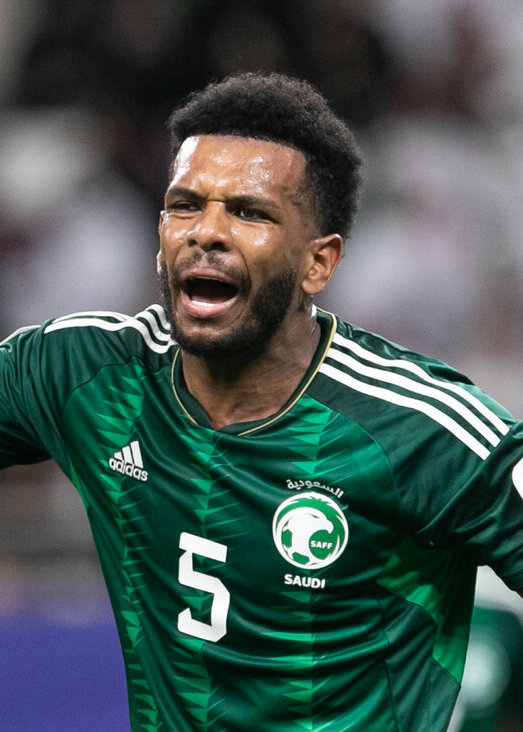 |
| Sultan Al-Ghannam | Lateral derecho | 28 |
Sultan Al-Ghannam es lateral derecho rápido y ofensivo, aportando tanto en defensa como en ataque. |
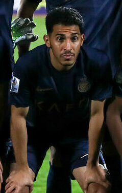 |
| Abdullah Al-Khaibari | Mediocampista defensivo | 28 |
Abdullah Al-Khaibari es mediocampista defensivo, con gran capacidad para recuperar balones y distribuir juego. |
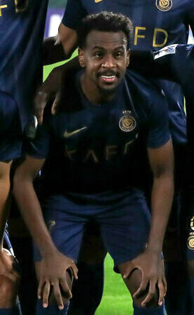 |
| Rashed Al-Shahrani | Lateral izquierdo | 27 |
Rashed Al-Shahrani es lateral izquierdo ofensivo y defensivo, destacando por su velocidad y entrega en ambos extremos del campo. |
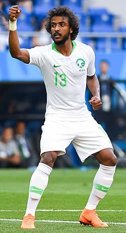 |
| Mohammed Kanno | Mediocampista | 27 |
Mohammed Kanno es mediocampista central, clave en la recuperación y distribución del balón para la selección saudí. |
|
| Nasser Al-Dawsari | Mediocampista | 28 |
Nasser Al-Dawsari es mediocampista talentoso, capaz de crear juego y asistir en ataque para el equipo nacional. |
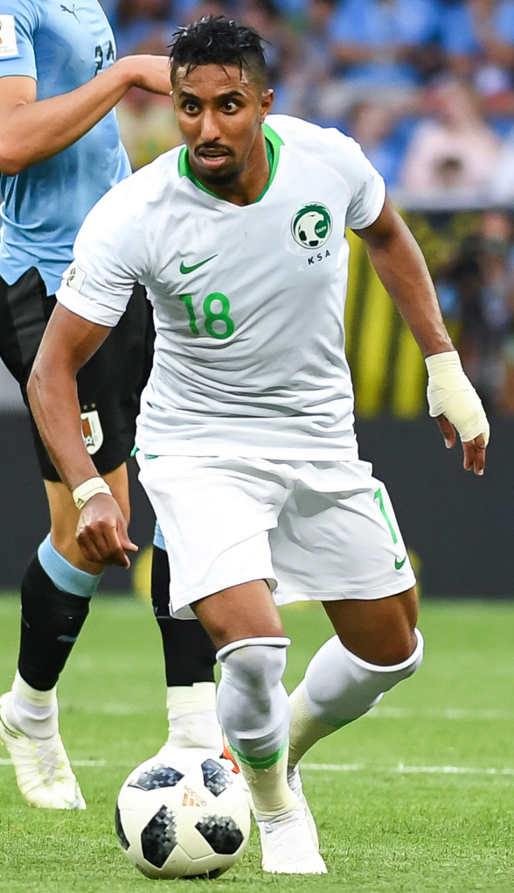 |